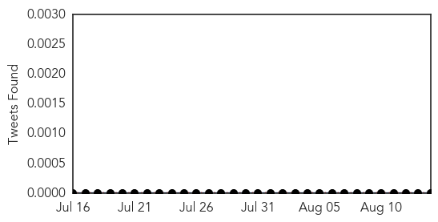
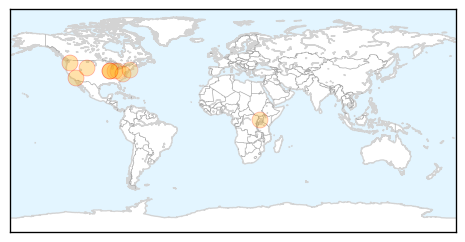

30 Day Trends
Web: 0 alerts, 0 warnings
Twitter: 0 alerts, 0 warnings
Top Articles:
- 0.997
- West Nile virus claims Benton County man’s life
- 0.995
- Another drought danger, county confirms first cases of 2015
- 0.994
- Mosquitoes test positive for West Nile virus in Crete
- 0.968
- West Nile virus hospitalizes Valley resident
- 0.930
- Diseases Prompt Caution from Wyoming State Veterinary Laboratory
- 0.903
- Bloomington mosquito pool positive for West Nile Virus
- 0.857
- How a Color Can End Sleeping Sickness in Africa
- 0.804
- Orange County Horse is First Case of West Nile Virus in Virginia in 2015
- 0.763
- West Nile on the rise
- 0.721
- West Nile found in area
- 0.584
- Mosquitoes Test Positive For West Nile Virus In Putnam County
Top Tweets:
-
No tweets found for Aug 14, 2015
Web/News Articles

Tweets
Article Locations
Article Confidences